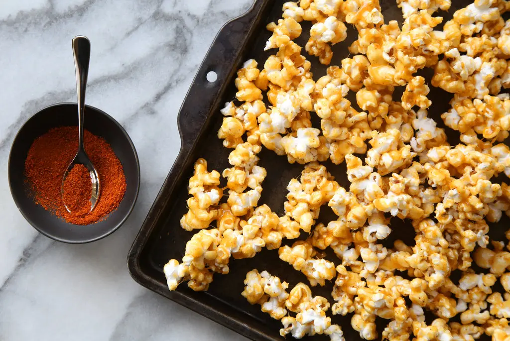

Spicy Caramel Popcorn

Source: NYT Cooking
Description
Sweet, sticky caramel popcorn gets a kick of cayenne pepper and the combination is nonpareil.
Once the caramel is poured over the popcorn, work quickly and let it cool a bit before serving.
The snack is easy to make, and running out will likely be a problem -- so have extra supplies on hand.
Ingredients
- Nonstick cooking spray
- 3 tablespoons vegetable oil
- 1/2 cup popcorn kernels
- 1 1/2 teaspoons baking soda
- 3/4 teaspoon cayenne pepper
- 3 cups sugar
- 3 tablespoons unsalted butter
- 1 1/2 tablespoons kosher salt
Instructions
- Lightly coat two large, heatproof rubber spatulas and a large mixing bowl with nonstick cooking spray.
- In a large saucepan or pot with a lid, heat the oil over medium-high heat. Add the popcorn kernels,
cover and keep the saucepan moving until all of the kernels have popped, about 5 minutes. Transfer to
the prepared bowl, removing any unpopped kernels.
- In a small bowl, whisk together the baking soda and cayenne pepper.
- Have two large baking sheets ready. In a medium saucepan, combine the sugar, butter, salt and 1/2 cup water.
Cook over high heat, without stirring, until the mixture becomes a light golden caramel, 10 to 14 minutes.
Remove from the heat and carefully whisk in the baking-soda mixture (the mixture will bubble up).
- Immediately pour the caramel mixture over the popcorn. Working quickly and carefully, use the prepared
spatulas to toss the caramel and popcorn together, as if you were tossing a salad, until the popcorn is well coated.
- Spread the popcorn onto the baking sheets and quickly separate them into small pieces while still warm. Cool to room temperature,
about 15 minutes. Once cool, store in an airtight container for up to 2 weeks.